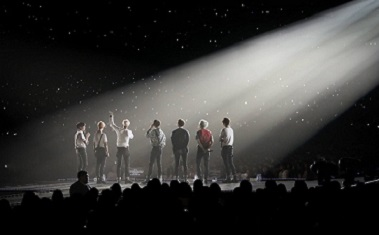

Nadie es o ha sido capaz de conseguir lo mismo que BTS. En nueve años, esta increíble boyband conformada por siete talentosos jóvenes encabezó las listas de Corea del Sur desde 2016 y se abrió paso al mercado internacinal en 2017, dando como consecuencia que se convirtiera en el grupo musical más grande del planeta, el cuál a traves de su música ha logrado unir a millones de personas alrededor del mundo. A continuación podrás leer como empezaron con este fenómeno mundial y a que se debe su gran éxito. Sin más que decir, let's go~
Se dieron a conocer en el 2011, Big Hit estuvo buscando en 2010 a un grupo de hombres basado en el Hip-Hop. Por esto se hizo una audición "Hit It" y tras la selección de los chicos se le iba a poner nombre al grupo. Pero desde su selección, el grupo atravesó algunos cambios de chicos durante el entrenamiento y se tuvo que posponer su debut.
Aunque no había muchas esperanzas de futuro dentro de la industria para un grupo híbrido de pop coreano y hiphop de un sello pequeño, ahora se cree que probablemente la razón de su éxito fue este humilde origen.
Finalmente hicieron su debut el 13 de junio de 2013, con siete miembros (RM, Jin, Suga, J-Hope, Jimin, V y Jungkook) con la contundente canción de hip-hop “No More Dream”. Desde el principio hablaron sobre problemas sociales, tales como los adolescentes sobrecargados siendo estafados por sus sueños. Era claro desde el exterior que tenían algo diferente.